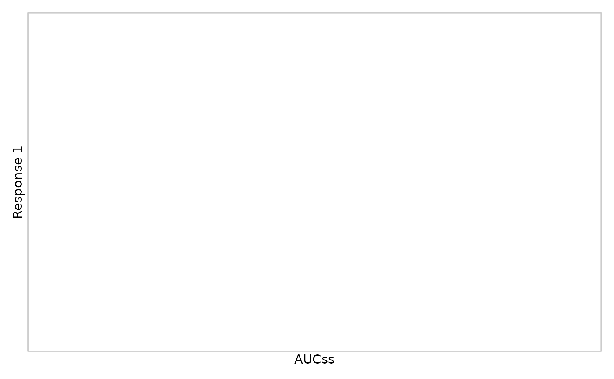
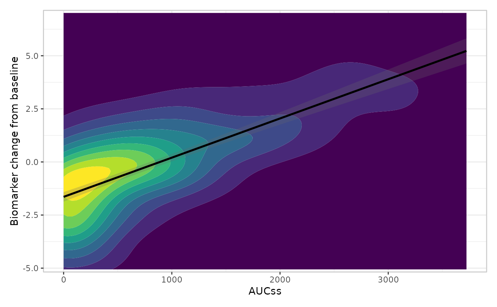
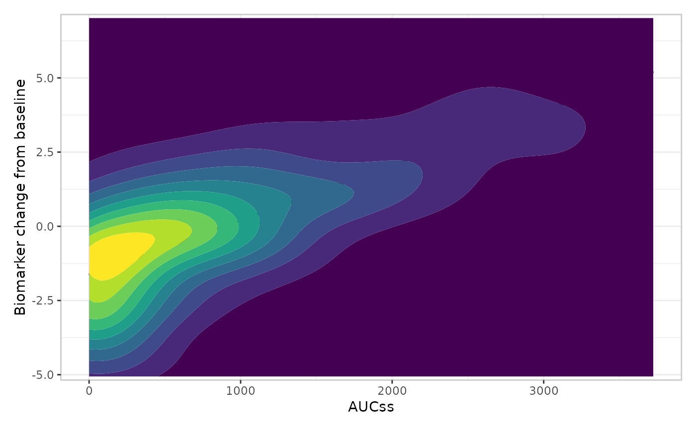
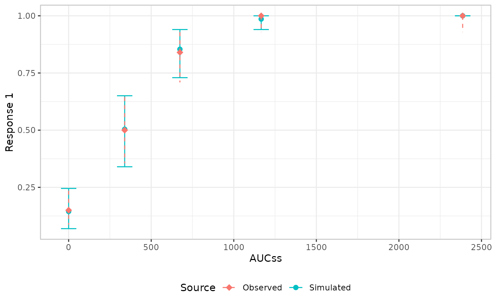
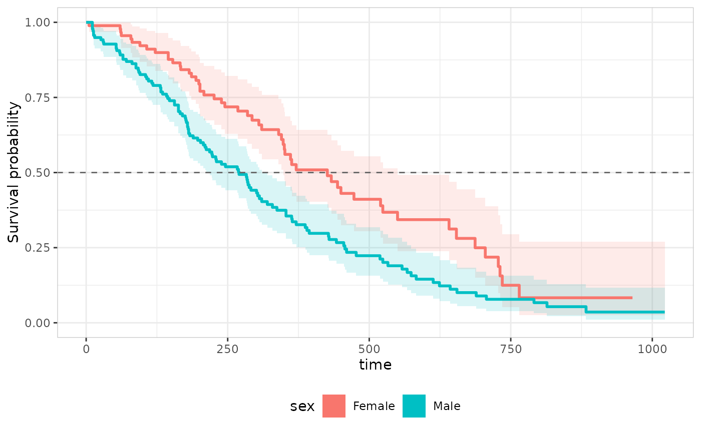

The goal when writing the erplots package was to provide a flexible mini-language for exposure-response plots that pharmacometricians could use to create most such plots without needing to write hundreds of lines of ggplot2 code. One problem with doing so, however, is that it is almost impossible to anticipate every possible use case for the package. Inevitably, there will be some cases where the specific plot that you need can’t be constructed using the functions that are supplied by erplots. This could then become frustrating for the user, if they already have code that generates most of what they need using erplots, but can’t quite get exactly what they need because there’s one esoteric special case that the package can’t handle.
To mitigate this risk, erplots comes with an extension mechanism: you can write your own “builder” function that will generate the one part of the exposure-response plot that you need to modify, and then erplots will handle the rest.
This article discusses that extension mechanism, by showing you how to write a “builder” function. It assumes you’re already familiar with the erplots mini-language described in the exposure-response plotting grammar article (layers, singleton/additive semantics, stratification); and have a good sense of the overall process of building plots with the package.
What is a builder function?
When creating an exposure-response plot with erplots, you first call
er_plot() to create the basic data structure, and then add
a series of layers using the five layer functions
(er_plot_add_model(), er_plot_add_summary(),
er_plot_add_quantiles(), er_plot_add_data(),
er_plot_add_groups()) to add the features you want to see
in your plot. The key thing to note is that these layer functions don’t
create the ggplot2 code themselves. Instead, they delegate that work to
some other function that you specify via the style
argument. That function is referred to as the “builder” for that layer.
The erplots package comes with several different builders for each
layer:
| Layer | Builders |
|---|---|
| Model |
er_style_model_ribbonline() (default),
er_style_model_line(),
er_style_model_spaghetti()
|
| Data |
er_style_data_overlay() (default),
er_style_data_boxjitter(),
er_style_data_hex()
|
| Quantile |
er_style_quantile_errorbar() (default),
er_style_quantile_errorbar_vlines(),
er_style_quantile_pointrange(),
er_style_quantile_pointrange_vlines()
|
| Summary |
er_style_summary_pvalue() (default),
er_style_summary_n(),
er_style_summary_coefficients(),
er_style_summary_gof()
|
| Groups |
er_style_group_boxplot() (default),
er_style_group_histogram(),
er_style_group_violin()
|
These builders cover a wide variety of different stylistic features you might want to employ in your exposure-response plots, but if the feature you want is not available, you can write your own. As long as your builder function has the expected structure, erplots will understand what it does and use it when constructing a plot.
The builder signature
The main constraint that you need to satisfy when writing a builder
function is to make sure that it takes the expected arguments, and uses
those arguments in a manner that is consistent with what the erplots
grammar expects. Specifically, every builder function must have this
signature, documented in full at er_style():
The table below is a quick summary of what erplots passes into each
slot; see er_style() if you need the complete
reference:
| Argument | What it is |
|---|---|
data |
The original data frame passed to er_plot(),
unmodified. |
config |
The pre-computed configuration for this specific layer. This is different for each layer, and is discussed in more detail below. |
stratify |
TRUE/FALSE: whether this layer should
honour stratify_by. |
exposure, response,
strata
|
Plot-variable metadata lists (name, label,
limits, …) describing the exposure, response, and
stratification variables declared in er_plot(). |
theme |
Shared theming state, adjustable via er_plot_theme():
theme$theme_base, theme$draw_key,
theme$format_percent(),
theme$format_number(). |
... |
Extra named arguments forwarded from the corresponding
er_plot_add_*() call’s own .... See “Passing
extra arguments to a builder” below. |
The builder return value
The function returns a geom, or a list of geoms/other objects that can be added to a ggplot2 plot – nothing more.
Passing extra arguments
Every er_plot_add_*() function also takes its own
..., forwarded unchanged to style when it’s
called at build time. Extra arguments must be named – they’re appended
positionally after the seven standard arguments, so an unnamed one would
silently bind to the wrong parameter. A builder that doesn’t need any
extra arguments simply declares ... and ignores it, as
every builder in this article does; see er_style()’s own
“Passing extra arguments to a builder” section (and
er_style_model_spaghetti()’s use of a seed
passed this way) for a worked example.
This ... is for the builder only. It’s a
different mechanism from er_plot_add_model()’s
predict_args, er_plot_add_summary()’s
summary_args, and er_vpc_add_simulated()’s
simulate_args – those are spliced into the model-interface
generics themselves
(er_predict()/er_summary()/er_simulate()),
for a model-specific argument with no slot in their fixed contract
(e.g. a landmark time for a time-to-event model). If you’re writing a
custom builder, you’ll never see
predict_args/summary_args/simulate_args
– they never reach config or the builder’s own
.... If you’re implementing the model interface for your
own model class instead, see Implementing
the model interface, which covers that mechanism.
Understanding the config argument
config is where a custom builder actually gets its data
from, and it is not the raw data frame –
it’s whatever erplots derived from
data/exposure/response/strata
before any builder ran. A custom builder’s whole job is to turn that
already-computed config into ggplot2 layers; it never needs
to re-bin, re-summarise, or re-fit anything itself. Concretely:
| Layer | Key config field |
Contents |
|---|---|---|
| Model | config$predictions |
One row per exposure grid point, with fit_resp,
ci_lower, ci_upper (from
er_predict()) |
| Summary |
config$summary, config$p_value,
config$corner_distance
|
config$summary is the full, raw return value of
er_summary() (NULL unless a model
was supplied) – see Implementing the
model interface for its
p_value/coefficients/glance
contract; config$p_value is that same list’s
p_value field, extracted separately since
er_style_summary_pvalue() reads it directly;
corner_distance is a named vector of four minimum distances
(top_left/top_right/bottom_left/bottom_right),
computed from data’s raw (exposure, response)
points rescaled onto [0, 1], used to place a label away
from the observed data |
| Quantile | config$summary |
One row per exposure-quantile bin (× stratum), with
x_mid, y_mid, ci_lower,
ci_upper, plus label-placement columns.
config$breaks also holds the n + 1 quantile
cutpoints themselves (from cut_exposure_quantile()), which
er_style_quantile_errorbar_vlines()/er_style_quantile_pointrange_vlines()
use to draw bin-boundary separators |
| Data | (none extra) | The builder mostly works from data directly, since this
layer draws raw observations rather than a summary |
| Group |
config[[group_var]]$data,
config[[group_var]]$counts
|
The subset of data for that grouping variable, joined
to per-group sample-size labels |
A worked example
The story above is not entirely complete, but it covers enough that
we can work through an example. Let’s suppose the built-in
er_style_quantile_errorbar() and
er_style_quantile_pointrange() alternatives all feel like
the wrong way to display the data summaries by exposure quantile.
Instead, you would prefer to draw these binwise summaries using a
geom_crossbar(). This isn’t usually a great choice – more
on that below – but you may have a good reason for wanting it, so you
decide to write your own builder function for this. And since the
quantile layer is mostly dependent on the config$summary
field, that’s the place to start. When doing so, it helps to look at
what config$summary actually contains, and the most
reliable way to do that is to ask erplots to show you: write a tiny
“spy” builder that just prints config and draws nothing,
and pass it in as the style for the layer you want to
inspect:
mod <- erglm_model(ae1 ~ aucss, erglm_data, family = binomial())
inspect_config <- function(data, config, stratify, exposure, response, strata, theme, ...) {
print(config$summary)
list()
}
erglm_data |>
er_plot(aucss, ae1) |>
er_plot_add_quantiles(bins = 6, style = inspect_config) |>
plot()
#> # A tibble: 7 × 12
#> exposure_bins strata n1 n0 x_mid y_mid y_mid_lbl ci_lower ci_upper
#> <fct> <lgl> <int> <int> <dbl> <dbl> <chr> <dbl> <dbl>
#> 1 Q3 NA 30 3 757. 0.909 91% 0.757 0.981
#> 2 Q6 NA 34 0 2693. 1 100% 0.897 1
#> 3 Placebo NA 15 85 0 0.15 15% 0.0865 0.235
#> 4 Q4 NA 33 0 1080. 1 100% 0.894 1
#> 5 Q1 NA 16 18 287. 0.471 47% 0.298 0.649
#> 6 Q2 NA 21 12 488. 0.636 64% 0.451 0.796
#> 7 Q5 NA 33 0 1645. 1 100% 0.894 1
#> # ℹ 3 more variables: y_lwr_lbl <dbl>, y_upr_lbl <dbl>, y_lbl <dbl>
Looking at this object we see that it is a tibble with one row per exposure quantile (as always, noting that the placebo group will be its own distinct group). Each column contains a summary statistic or indicator variable that you might want to use in your builder function:
-
x_midandy_midcapture mean exposure and mean response associated with the exposure bin. Our new builder will need to use these. -
ci_lowerandci_upperare the confidence interval bounds. Our builder will need these too. -
y_mid_lbl,y_lwr_lbl,y_upr_lbl, andy_lblsupport the built-in label geom thater_style_quantile_errorbar()draws alongside its error bar. If we wanted to use labels in our plot we would need these columns, but since we plan to skip that we can ignore them.
Now that we understand what config$summary already
provides, writing the builder itself is very straightforward. All we
need is a small function that maps those columns onto
geom_crossbar()’s aesthetics:
er_style_quantile_crossbar <- function(data,
config,
stratify,
exposure,
response,
strata,
theme,
...) {
ggplot2::geom_crossbar(
data = config$summary,
mapping = ggplot2::aes(
x = x_mid,
y = y_mid,
ymin = ci_lower,
ymax = ci_upper
),
inherit.aes = FALSE
)
}That’s all we need here. This particular builder is simple enough that we just need to specify a single geom, and erplots will handle the rest. Here’s what it looks like when we use it:
erglm_data |>
er_plot(aucss, ae1) |>
er_plot_add_model(mod) |>
er_plot_add_quantiles(style = er_style_quantile_crossbar) |>
plot()
This is not, in general, a good way to create an exposure-response plot: in statistical graphics, the “cross bar” visual idiom is almost always used to show distributional information (i.e., it feels like a boxplot without the whiskers). Using it to display a mean and confidence interval is almost certainly going to confuse anyone looking at your plot. Even so, it’s convenient to illustrate how to design a builder function.
Before moving on, there are a few things worth noting about this builder, all of which are generalisable to any layer:
- It ignores
data,stratify,exposure,response,strata, andthemeentirely – a builder only needs to use the arguments relevant to what it draws. (A stratified version would need to mapcolor = strataand useconfig$summary’sstratacolumn, plustheme$draw_keyfor a legend key consistent with the other layers – seeer_style_quantile_errorbar()’s source for a worked stratified example.) -
inherit.aes = FALSEis there because this geom supplies its owndata/mapping, distinct from whatever’s already on the base plot (the model curve, in this example) – omitting it would try to inherit the base plot’s aesthetics and fail, since those don’t includeymin/ymax. - No new
configfields were needed.er_style_quantile_pointrange()(a singlegeom_pointrange()in place of the errorbar+point pair) started life as exactly this kind of custom builder, and was promoted to a built-in option once it proved to fit the existingconfigshape – a reasonable bar to check your own custom builders against if you’re considering proposing one upstream.
Supplying builder metadata
The quantile builder above needed nothing beyond the function itself.
Some builders, though, make a structural or aesthetic choice that the
composition machinery (the code that assembles/labels/legends
the finished plot) needs to know about before it calls the
builder. Since a builder is “just a function”, that information can’t
live in its return value – composition needs it in advance, to decide
things like which panel to route the builder’s output into, or how to
title a legend. erplots solves this by letting a builder carry metadata
as attributes on the function itself, set by a single
wrapper function, er_style_tag(), with one optional
argument per piece of metadata (layout,
fill_role, y_role, layer,
draw_order). It wraps a builder and returns it back,
attributes attached, so it composes naturally with assignment, and a
builder that needs more than one tag only needs one call:
my_builder <- er_style_tag(my_builder, layout = "overlay")
layout: which structural family a data-layer builder
belongs to
The data layer (er_plot_add_data()) is the one layer
with two mutually exclusive structural families a builder can be slotted
into:
-
"overlay": a single call merged directly onto the main model panel, at the observations’ true(exposure, response)coordinates (whater_style_data_overlay(), the default, does). -
"panel": one or more panels stacked below the base plot, the wayer_plot_add_groups()’s panels are (whater_style_data_boxjitter(), the binary-only boxplot+jitter design, does).
er_plot_add_data() has to decide which of two different
config shapes to build before it can call the
builder – so the layout can’t be inferred from what the builder returns;
it has to be knowable from the builder alone.
er_style_tag(style, layout = ...) attaches that information
as an attribute, and is the one tag that’s mandatory for a data-layer
builder:
attr(er_style_data_overlay, "er_style_layout")
#> [1] "overlay"
attr(er_style_data_boxjitter, "er_style_layout")
#> [1] "panel"A custom data-layer builder that omits this tag fails fast, with a message telling you what to do, rather than silently landing in the wrong structural slot:
untagged_builder <- function(data, config, stratify, exposure, response, strata, theme, ...) {
ggplot2::geom_point(ggplot2::aes(x = .data[[exposure$name]], y = .data[[response$name]]))
}
erglm_data |>
er_plot(aucss, ae1) |>
er_plot_add_data(style = untagged_builder) |>
plot()
#> Error in `.style_layout()`:
#> ! `style` must declare its structural layout.
#> ℹ Wrap a custom data-layer builder with `er_style_tag(style, layout = "overlay")` or `er_style_tag(style, layout = "panel")`.
#> ℹ The built-in builders (`er_style_data_overlay()`, `er_style_data_boxjitter()`) already do this.Tagging it with er_style_tag() fixes that. Here’s a
complete custom "overlay"-layout data builder – a 2D
density contour in place of raw points, useful when there are enough
observations that a scatter overplots into an unreadable smear:
er_style_data_density <- er_style_tag(
function(data, config, stratify, exposure, response, strata, theme, ...) {
ggplot2::geom_density2d(
data = data,
mapping = ggplot2::aes(x = .data[[exposure$name]], y = .data[[response$name]]),
inherit.aes = FALSE
)
},
layout = "overlay"
)
erglm_data |>
er_plot(aucss, ae1) |>
er_plot_add_model(mod) |>
er_plot_add_data(style = er_style_data_density) |>
plot()
fill_role: what a builder’s fill aesthetic
means
On the base plot, fill almost always means strata
(e.g. a stratified model ribbon). er_style_data_hex() – a
built-in "overlay"-layout data builder for when N is too
large for a legible scatter – is the one exception: its
fill encodes 2D bin density (a continuous scale), not
strata, so erplots needs to know to title that legend “Count” rather
than the stratification variable’s label.
er_style_tag(style, fill_role = "density") records exactly
that:
attr(er_style_data_hex, "er_style_fill_role")
#> [1] "density"
erglm_data |>
er_plot(aucss, biomarker_change) |>
er_plot_add_model(erglm_model(biomarker_change ~ aucss, erglm_data, family = gaussian())) |>
er_plot_add_data(style = er_style_data_hex) |>
plot()
Note the legend is titled “Count”, not the (nonexistent, here) strata
label – that’s erplots consulting the "density" tag. Unlike
layout, fill_role is optional: a builder that
doesn’t set it is assumed to mean strata whenever it maps
fill at all, which is the right default for every other
builder.
y_role: what a builder’s y-axis means
er_plot_add_groups()’s default builders
(er_style_group_boxplot(),
er_style_group_violin()) put the group variable
itself on the y-axis – one categorical row per level – so the group
variable’s own label is the right axis title.
er_style_group_histogram() instead needs its y-axis free
for counts, moving group levels onto facet strips instead;
er_style_tag(style, y_role = "count") tells erplots to
title the y-axis “Count” rather than the group variable’s label:
attr(er_style_group_histogram, "er_style_y_role")
#> [1] "count"
erglm_data |>
er_plot(aucss, ae1) |>
er_plot_add_model(mod) |>
er_plot_add_groups(group_by = treatment, style = er_style_group_histogram) |>
plot()
Like fill_role, this tag is optional – a group builder
that doesn’t set it keeps the default behaviour (group variable’s label
on the y-axis), which is correct for
er_style_group_boxplot()/
er_style_group_violin().
layer: which er_plot_add_*() a builder is
meant for
layout, fill_role, and y_role
all feed the composition machinery – deciding where a builder’s
output goes, or how to title a legend/axis once it’s drawn.
layer is different: it’s read by the
er_plot_add_*() functions themselves, before they
call the builder at all, purely to catch a builder plugged into the
wrong slot. Every built-in builder declares it –
er_style_quantile_errorbar() is tagged
layer = "plot_quantile",
er_style_group_violin() is tagged
layer = "plot_group", and so on for all five layers
("plot_model", "plot_summary",
"plot_quantile", "plot_data",
"plot_group" – "plot_summary" is its own
layer, er_plot_add_summary(), independent of the model
layer). Every value is prefixed with the grammar it belongs to
(plot_/vpc_/tte_) – see “Writing
a custom builder for er_tte()” below for why. Passing a
builder tagged for one layer into a different layer’s
er_plot_add_*() call errors immediately, naming both the
layer the builder was tagged for and the layer it was actually passed
to:
erglm_data |>
er_plot(aucss, ae1) |>
er_plot_add_model(mod) |>
er_plot_add_data(style = er_style_quantile_errorbar)
#> Error in `.check_style_layer()`:
#> ! `style` is tagged for the "plot_quantile" layer, but was passed to a "plot_data" layer function.
#> ℹ Use a builder tagged `er_style_tag(fn, layer = "plot_data")` (or with no `layer` tag at all).
attr(er_style_quantile_errorbar, "er_style_layer")
#> [1] "plot_quantile"Unlike layout, layer is entirely optional –
a custom builder that omits it is simply never checked, regardless of
which er_plot_add_*() it’s passed to. This means existing
custom builders written before layer existed keep working
unchanged; tagging one is purely a way to get an earlier, more specific
error if it’s ever passed to the wrong place by mistake.
draw_order: where an overlay-layout data builder’s
geoms sit in the main panel
The model, summary, and quantile layers always draw in the same fixed
order relative to each other when they share the main panel. An
"overlay"-layout data builder’s geoms, by default, draw
last – on top of all three – which is the right choice for a
sparse builder like er_style_data_overlay(), whose
individual points should never be hidden behind a translucent model
ribbon. But a builder whose geoms cover the whole panel, with
no gaps for anything underneath to show through, would completely bury
the model curve and summary annotation by drawing last in the same way.
er_style_tag(style, draw_order = "background") tells
erplots to draw that builder’s geoms first instead, so the
model/summary/quantile layers are drawn on top of it.
er_style_data_hex() is tagged this way:
attr(er_style_data_hex, "er_style_draw_order")
#> [1] "background"Here’s a custom "overlay"-layout builder that makes the
same choice – a filled 2D density contour, which (like
er_style_data_hex()) covers the whole panel:
mod_gaussian <- erglm_model(biomarker_change ~ aucss, erglm_data, family = gaussian())
er_style_data_density_fill <- er_style_tag(
function(data, config, stratify, exposure, response, strata, theme, ...) {
ggplot2::geom_density_2d_filled(
data = data,
mapping = ggplot2::aes(x = .data[[exposure$name]], y = .data[[response$name]]),
contour_var = "ndensity",
show.legend = FALSE
)
},
layout = "overlay",
draw_order = "background"
)
erglm_data |>
er_plot(aucss, biomarker_change) |>
er_plot_add_model(mod_gaussian) |>
er_plot_add_data(style = er_style_data_density_fill) |>
plot()
The model curve stays visible because the filled contours were drawn
first. Omitting the draw_order tag (or setting it to
"foreground", equivalent to the default) draws exactly the
same contours after the model curve instead, burying it
completely:
er_style_data_density_fill_fg <- er_style_tag(
function(data, config, stratify, exposure, response, strata, theme, ...) {
ggplot2::geom_density_2d_filled(
data = data,
mapping = ggplot2::aes(x = .data[[exposure$name]], y = .data[[response$name]]),
contour_var = "ndensity",
show.legend = FALSE
)
},
layout = "overlay"
)
erglm_data |>
er_plot(aucss, biomarker_change) |>
er_plot_add_model(mod_gaussian) |>
er_plot_add_data(style = er_style_data_density_fill_fg) |>
plot()
draw_order only has an effect on an
"overlay"-layout data builder. A
"panel"-layout builder’s geoms
(e.g. er_style_data_boxjitter()) are drawn in their own,
separate patchwork panel, never sharing space with the
model/summary/quantile layers, so the tag is inert there if set.
One function, five independent arguments
layout, fill_role, y_role,
layer, and draw_order are all set via the same
er_style_tag() call rather than five separate wrapper
functions. Each argument is independent and optional (aside from
layout being mandatory for a data-layer builder
specifically – see above), so a builder that needs to declare more than
one piece of metadata – say, a custom “overlay”-layout data builder
whose fill also means something other than strata, and
whose geoms cover the whole panel – can do it in one call:
my_density_builder <- er_style_tag(
my_density_builder,
layout = "overlay",
fill_role = "density",
layer = "plot_data",
draw_order = "background"
)This is close to what the built-in er_style_data_hex()
does (it sets layout, fill_role,
layer, and draw_order together).
Summary
| Argument | Applies to | Required? | What it controls |
|---|---|---|---|
layout |
Data-layer builders only | Yes – errors if missing |
"overlay" (merged onto the main panel)
vs. "panel" (stacked panels below) |
fill_role |
Any builder mapping fill
|
No – defaults to strata | Legend title for a non-strata fill aesthetic
(e.g. "density") |
y_role |
Group-layer builders only | No – defaults to the group variable’s label | y-axis title when the y-axis isn’t the group variable itself
(e.g. "count") |
layer |
Any builder | No – unchecked if unset | Which er_plot_add_*() the builder is meant for;
mismatches error immediately |
draw_order |
"overlay"-layout data builders only |
No – defaults to "foreground"
|
"foreground" (drawn after model/summary/quantile)
vs. "background" (drawn before) |
None of this machinery is needed for a builder that draws a familiar
idiom in a familiar slot – the crossbar example above needed no tags at
all. It exists for the less common case where a builder changes
where its output goes, or what one of its aesthetics
represents, and the rest of the plot needs to be told so it can label
things correctly. See er_style() for the full public-API
contract, and the exposure-response plotting
grammar article for how these layers fit together more broadly.
Writing a custom builder for er_vpc()
Everything above is about er_plot()’s own builders.
er_vpc() (see Visual predictive
checks) has its own, narrower shared signature, documented in full
at er_style_vpc():
The main difference from er_plot()’s signature is that
stratify/ strata are missing – a VPC builder
never needs to know about stratification directly, since
er_vpc()’s stratify_by only ever facets the
finished plot rather than recolouring it. See
er_style_vpc() for the full rationale.
config$summary is the table both
er_style_vpc_observed_mean_errorbar() and
er_style_vpc_simulated_mean_errorbar() (the defaults) plot
from: one row per bin, with
y_mid/ci_lower/ci_upper and,
depending on config$is_numeric_group, either
.vpc_bin (a categorical plot_by) or
x_median/x_mid (a numeric one) to plot at.
config$percentiles is the table the
quantile-line/quantile-errorbar idioms read instead – one row per bin
and per requested percentile – and is only computed for a
continuous/count response with probs set; a builder that
expects it should check for NULL the way every built-in one
does, or declare response_types (below) so
er_vpc_add_observed()/er_vpc_add_simulated()
catch the mismatch earlier.
A worked example
Suppose the default point-and-solid-errorbar look for the observed
layer doesn’t stand out enough against a ribbon-heavy simulated layer.
Diamond markers with a dashed error bar are one easy way to make the
observed side visually distinct, built the same way
er_style_vpc_observed_mean_errorbar() itself is, straight
from config$summary:
er_style_vpc_observed_diamond <- er_style_tag(
function(data, config, exposure, response, theme, ...) {
x_var <- if (config$is_numeric_group) "x_median" else ".vpc_bin"
list(
ggplot2::geom_errorbar(
data = config$summary,
mapping = ggplot2::aes(x = .data[[x_var]], ymin = ci_lower, ymax = ci_upper, color = "Observed"),
width = 0.15, linetype = "dashed",
inherit.aes = FALSE
),
ggplot2::geom_point(
data = config$summary,
mapping = ggplot2::aes(x = .data[[x_var]], y = y_mid, color = "Observed"),
shape = 18, size = 3,
inherit.aes = FALSE
)
)
},
layer = "vpc_observed",
response_types = c("binary", "continuous", "count"),
plot_by_types = c("continuous", "discrete"),
marker_source = "summary"
)Plugged in for the observed layer only – there’s no requirement to customise both sides of the comparison at once – it pairs without incident against the default simulated builder:
mod <- erglm_model(ae1 ~ aucss, erglm_data, family = binomial())
erglm_data |>
er_vpc(exposure = aucss, response = ae1) |>
er_vpc_add_observed(style = er_style_vpc_observed_diamond) |>
er_vpc_add_simulated(model = mod, seed = 1234) |>
plot()
VPC-specific er_style_tag() arguments
er_vpc_add_observed()/er_vpc_add_simulated()
recognise four er_style_tag() arguments beyond
layer (checked the same way as
er_plot_add_*()’s own layer tag above), none
of which apply to an er_plot() builder:
| Argument | Applies to | Required? | What it controls |
|---|---|---|---|
response_types |
Any VPC builder | No – unchecked if unset | Which of
"binary"/"continuous"/"count"
responses the builder supports |
plot_by_types |
Any VPC builder | No – unchecked if unset | Whether the builder supports a "continuous" (numeric)
plot_by, a "discrete" (categorical) one, or
both |
vpc_layout |
Any VPC builder | No – unchecked if unset |
"categorical" (plots at discrete bin locations)
vs. "continuous" (plots at each bin’s numeric midpoint) –
a separate argument from the data layer’s own
layout, which uses an unrelated
"overlay"/"panel" pair, and checked
between the observed and simulated builder rather than against a fixed
rule |
marker_source |
Any VPC builder | No – unchecked if unset | Which config table ("summary" or
"percentiles") the builder actually draws its marker(s)
from, read by er_vpc_theme()’s
xlim/ylim clipping check (see Visual predictive checks) |
response_types/plot_by_types are checked
against the VPC object’s own data, not against another builder –
er_style_vpc_observed_quantile_line() declares
response_types = c("continuous", "count") (it needs
config$percentiles, never computed for a binary response),
so pairing it with a binary-response VPC errors immediately, before any
binning happens:
erglm_data |>
er_vpc(exposure = aucss, response = ae1) |>
er_vpc_add_observed(style = er_style_vpc_observed_quantile_line)
#> Error in `.check_style_response_type()`:
#> ! `style` does not support a "binary" response.
#> ℹ It only supports: "continuous", "count".vpc_layout, by contrast, is checked between the
two builders passed to
er_vpc_add_observed()/er_vpc_add_simulated(),
not against the data – pairing a "categorical"-layout
builder with a "continuous"-layout one would otherwise plot
the two sides of the comparison at inconsistent x-positions for the same
bin:
stub_categorical <- er_style_tag(
function(data, config, exposure, response, theme, ...) list(),
layer = "vpc_observed", vpc_layout = "categorical"
)
stub_continuous <- er_style_tag(
function(data, config, exposure, response, theme, ...) list(),
layer = "vpc_simulated", vpc_layout = "continuous"
)
mod_gauss <- erglm_model(biomarker_change ~ aucss, erglm_data, family = gaussian())
erglm_data |>
er_vpc(exposure = aucss, response = biomarker_change) |>
er_vpc_add_observed(style = stub_categorical) |>
er_vpc_add_simulated(model = mod_gauss, seed = 1234, style = stub_continuous)
#> Error in `.check_vpc_layout_match()`:
#> ! The observed layer's builder is tagged vpc_layout = "categorical", but the simulated layer's builder is tagged vpc_layout = "continuous".
#> ℹ A "categorical" builder plots at discrete bin locations; a "continuous" builder plots at each bin's numeric midpoint -- pairing them plots the two layers at inconsistent x-positions.
#> ℹ Use a layout-matched pair (e.g. `er_style_vpc_observed_quantile_line()` + `er_style_vpc_simulated_quantile_ribbon()`).
#> ℹ Or leave `vpc_layout` untagged, like `er_style_vpc_observed_mean_errorbar()`/`er_style_vpc_simulated_mean_errorbar()` and `er_style_vpc_observed_quantile_errorbar()`/`er_style_vpc_simulated_quantile_errorbar()` do, to skip this check entirely.None of the built-in idioms actually disagree this way – the two
built-in vpc_layout-tagged builders
(er_style_vpc_observed_quantile_line()/
er_style_vpc_simulated_quantile_ribbon()) are already a
matched pair, and every other built-in pair leaves
vpc_layout untagged entirely, since their x-position adapts
to plot_by’s type at build time rather than being fixed.
The check exists for a custom builder that does commit to one
family or the other.
Writing a custom builder for er_tte()
er_tte() (see Time-to-event
plots) has its own shared signature too, documented in full at
er_style_tte(), closer to er_plot()’s than
er_vpc()’s:
time replaces
exposure/response, and unlike a VPC builder, a
TTE builder does get stratify/strata: TTE
stratification maps to colour/fill directly (one Kaplan-Meier curve per
stratum, same panel) rather than VPC’s facet-only treatment. See
er_style_tte() for the full rationale.
config’s contents differ by layer: the curve layer gets
config$table (the tidy Kaplan-Meier table, with a
(0, 1) origin row already prepended) and
config$time_upper; the censor layer gets a
config$table already filtered to censoring events; the
risktable layer gets its own
config$table/config$breaks; the pvalue layer
gets config$p_value/ config$corner_distance;
the model layer gets config$predictions/
config$time_grid. A custom builder for a given layer reads
whichever of these its own layer actually populates – see
er_style_tte_curve()/
er_style_tte_censor()/er_style_tte_risktable()/er_style_tte_summary()/
er_style_tte_model() for the exact shape of each.
A worked example
A Kaplan-Meier confidence band is drawn as a series of
ggplot2::geom_rect() rectangles (see
er_style_tte_curve_km()’s own documentation for why), which
makes building one from scratch more work than it’s worth for a small
addition like a reference line at 50% survival. Wrapping the built-in
curve builder and adding one more geom is the more direct route:
library(survival)
er_style_tte_curve_median <- er_style_tag(
function(data, config, stratify, time, strata, theme, ...,
show_ci = TRUE, ribbon_alpha = 0.15, linewidth = 1) {
geoms <- er_style_tte_curve_km(
data, config, stratify, time, strata, theme,
show_ci = show_ci, ribbon_alpha = ribbon_alpha, linewidth = linewidth
)
c(geoms, list(
ggplot2::geom_hline(yintercept = 0.5, linetype = "dashed", color = "grey40")
))
},
layer = "tte_curve"
)
lung_sex <- lung |> transform(sex = factor(sex, labels = c("Male", "Female")))
lung_sex |>
er_tte(time, status == 2, stratify_by = sex) |>
er_tte_add_curve(style = er_style_tte_curve_median) |>
plot()
The layer tag works identically to
er_plot()’s own – the same
er_style_tag(fn, layer = ...) mechanism, checked by every
er_tte_add_*() function against the layer it was actually
called from, just with five more valid values, all prefixed
tte_: "tte_curve", "tte_censor",
"tte_risktable", "tte_model", and
"tte_summary". The tte_ prefix is what lets
er_tte_add_model()/er_tte_add_summary() mint
their own distinct values rather than colliding with
er_plot()’s
"plot_model"/"plot_summary", since a TTE
builder and an er_plot() builder share neither a signature
nor config contents, so a builder written for one grammar
should never silently pass the tag check for the other. A builder tagged
for the wrong one errors immediately:
lung_sex |>
er_tte(time, status == 2, stratify_by = sex) |>
er_tte_add_curve(style = er_style_tte_censor_ticks)
#> Error in `.check_style_layer()`:
#> ! `style` is tagged for the "tte_censor" layer, but was passed to a "tte_curve" layer function.
#> ℹ Use a builder tagged `er_style_tag(fn, layer = "tte_curve")` (or with no `layer` tag at all).None of er_vpc()’s own extra tags
(response_types, plot_by_types,
vpc_layout, marker_source) apply to a TTE
builder – er_tte() has only one response variable shape (a
Surv()-style time/event pair) and one x-axis variable
(time, always continuous), so there’s nothing for those
tags to distinguish.
See The exposure-response plotting
grammar/Implementing the model
interface for how er_tte_add_model()’s builder relates
to er_predict_survival() specifically.